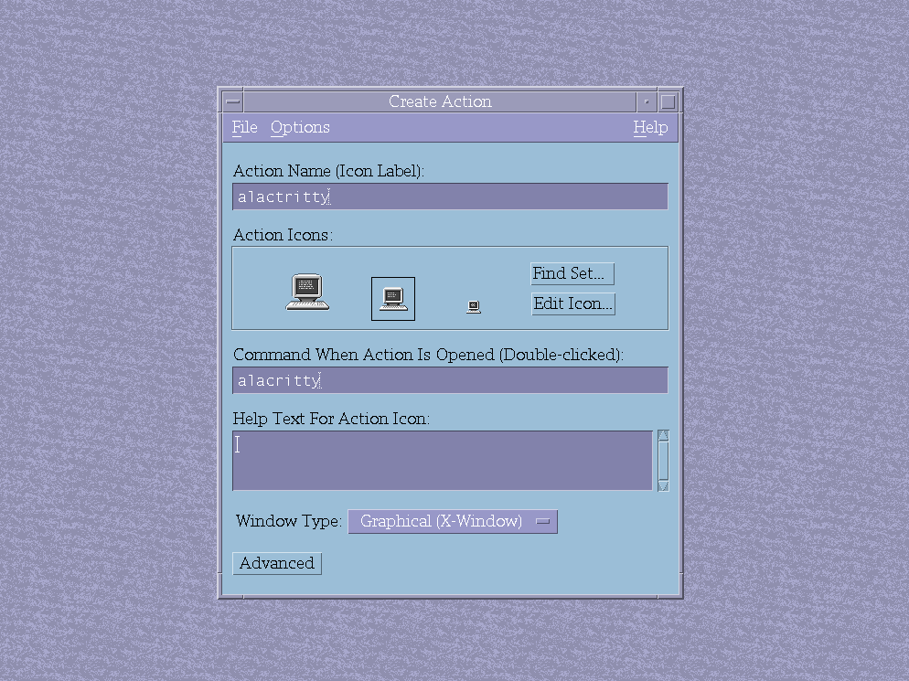

简介
通用桌面环境（Common Desktop Environment, CDE）是一个基于 Motif 的桌面环境，最初由 HP、IBM、Sun 等公司合作开发，在1990年代作为商用 Unix 工作站的标准桌面环境被广泛使用，直到2000年代初随着开源桌面环境（KDE, GNOME等）的兴起而被逐渐取代。2012年，CDE 宣布开源，随后被移植到 Linux 上，并被维护至今。
目前 CDE 的代码主要托管在 SourceForge 上。
准备工作
启动计算机，进入 Arch Linux，在 tty 中登入 root 账户。使用有线或无线方式连接互联网，并确保网络连线正常。开始之前，最好先滚动更新一下系统。
# pacman -Syu我在安装前把 KDE Plasma 卸载了，如果你有安装别的桌面环境，可能得先停掉正在运行的图形界面服务。
安装依赖
在安装 CDE 之前，需要先安装一些依赖包，这里是：
# pacman -S xorg xorg-server-devel gcc dnsutils git libxinerama libxss ncurses openmotif rpcbind xbitmaps bison flex tcl还有 ksh 和 ncompress：
# git clone https://aur.archlinux.org/ksh.git
# git clone https://aur.archlinux.org/ncompress.git然后进入这两个目录，编译安装：
# cd ksh
# makepkg -si
# cd ../ncompress
# makepkg -si如果你已经安装了 yay 也可用 yay 安装：
# yay -S ksh ncompress手动创建 /lib/cpp 符号链接：
# ln -s /usr/bin/cpp /lib/cpp这是必要的，CDE 的编译过程依赖于 C 预处理器（cpp）可执行文件位于 /lib/cpp 这个路径。如果找不到这个符号链接，CDE 的编译就会失败。
安装 CDE
登出 root 账户，登入你的用户账户，以避免使用 root 账户登录图形界面。
# exit克隆 CDE 仓库：
$ git clone https://git.code.sf.net/p/cdesktopenv/code cdesktopenv-code编译 CDE：
$ ./autogen.sh
$ ./configure
$ make
$ sudo make install这个过程可能需要很长时间，安装完成后就可以启动 CDE 了。
启动 CDE
在 tty 中输入：
$ startx /usr/dt/bin/Xsession或者你也可以启动 CDE 自带的 dtlogin 登录管理器：
$ /usr/dt/bin/dtlogin -daemon如果需要开机自动启动 dtlogin 的话，可以用任意文本编辑器在 /etc/systemd/system/ 目录下创建一个名为 dtlogin.service 的服务单元文件：
$ sudo vim /etc/systemd/system/dtlogin.service添加以下内容：
[Unit]
Description=CDE Login Manager
Requires=rpcbind.service
After=systemd-user-sessions.service
[Service]
ExecStart=/usr/dt/bin/dtlogin
[Install]
Alias=display-manager.service保存并退出：
:wq启用服务：
$ sudo systemctl enable dtlogin.service重启计算机，CDE 就会自动启动了。
使用
窗口顶部标题栏，左上角减号单击唤出菜单栏，双击关闭窗口，右上角圆点单击可以最小化窗口到桌面左侧（或者理论上其实是叫做 Workspace 左侧），方框单击可以最大化窗口。
最下面是 Front Panel，你可以从这里查看日期时间，在桌面间切换（One Two Three Four 名称可以右键更改），快捷启动一些应用程序，锁定屏幕或者登出账户。
没有关机或者重启选项，可能因为早期 Unix 小型机都是多用户共同使用的，由系统管理员统一负责开机和关机，所以也没有必要设计一个图形化的关机选项了。如果需要关机或者重启，只能退回到 tty 用 shutdown now 和 reboot 命令。
左三是 File Manager，左四是 Personal Applications。
单击上面的小三角可以弹出 Subpanel，可以通过将 App 拖拽进 Subpanel 顶部的 Install Icon 区域来添加项目，右键单击 App 可以选择把 App 钉在 Front Panel 上，会替代掉原本钉在 Front Panel 上的 App（默认情况下是 Text Editor）。
右二是 Style Manager，你可以在这进行一些个性化设置，比如在 Color 中，你可以选择不同的 Palettes 来调整 UI 颜色主题，比如我最喜欢的是 Orchid。
右三是 Applications Manager，右五是 Trash。
CDE 自带了 dtterm 作为终端模拟器，但是这个有点过于古老了日常使用中会碰到各种问题，还是用更为现代的 Konsole 比较好。
我遇到了在 Application Manager 里打不开 Chromium 浏览器的问题，因为 Chromium 的可执行文件名是 chromium 而不是 chromium-browser，需要手动更改 chromium.dt 文件：
$ sudo vim /usr/dt/appconfig/types/C/chromium.dt找到这一行：
EXEC_STRING chromium-browser %Arg_1%改成：
EXEC_STRING chromium %Arg_1%保存并退出即可，可能需要登出然后再重新登入一下，记不清了。
添加 App Manager 项目 / 更改 App 图标 —— 以 Dolphin 为例
Dolphin 由 KDE 团队开发，是 KDE Plasma 的默认文件管理器，相较于 CDE 自带的 dtfile，KDE 的 Dolphin 要更为现代一些。
我在卸载 KDE 的时候好像没把 Dolphin 删掉（不知道为什么），如果没有安装的话：
# pacman -S dolphin在 Application Manager 中新建 Personal 文件夹，把 Dolphin 链接过来：
# mkdir /usr/dt/appconfig/appmanager/C/Personal/
# ln -s /usr/bin/dolphin /usr/dt/appconfig/appmanager/C/Personal/dolphin推荐在 root 账户操作。
在 /usr/dt/appconfig/types/C/ 中添加 dolphin.dt 并添加内容。
# vim /usr/dt/appconfig/types/C/dolphin.dt添加以下内容：
ACTION dolphin
{
LABEL dolphin
TYPE COMMAND
ICON dolphin
EXEC_STRING /usr/bin/dolphin
WINDOW_TYPE NO_STDIO
}保存并退出。
Ctrl+Alt+F2 回到 CDE，打开 Chromium，找到并下载 dolphin.png，放到某个位置（比如家目录下的 Pictures）。CDE 的图标文件得是 .pm 格式的。需要把 .png 先转换成 .xpm，然后再直接改后缀名为 .pm。而且，需要三个不同大小的图标文件（.l.pm .m.pm .t.pm 分别对应 48x48 32x32 16x16）。因此，这里我们需要使用到 ImageMagick 工具。
Ctrl+Alt+F1 回到 tty，如果没有安装 ImageMagick 的话：
# pacman -S imagemagick进入 Pictures 目录，转换格式：
# cd ~/Pictures
# magick dolphin.png -resize 48x48 dolphin.l.xpm
# magick dolphin.png -resize 32x32 dolphin.m.xpm
# magick dolphin.png -resize 16x16 dolphin.t.xpm然后把后缀名都改成 .pm：
# mv dolphin.l.xpm dolphin.l.pm
# mv dolphin.m.xpm dolphin.m.pm
# mv dolphin.t.xpm dolphin.t.pm然后把这三个文件拷贝到 /usr/dt/appconfig/icons/C/ 目录下：
# cp dolphin.l.pm dolphin.m.pm dolphin.t.pm /usr/dt/appconfig/icons/C/回到 CDE，登出账户然后再重新登入，就可以看到更改已经生效了。
Create Action (2025-08-18)
后来我发现 Application Manager 的 Desktop Apps 分组里面有个 Create Action，是个用来创建 action 的 GUI 应用程序。你可以修改名称和图标，编辑 action 执行的命令，还可以选择窗口类型（GUI 或 CLI）。
在 tty 中，之前用 ln -s 创建的符号链接是浅蓝色的，action 是绿色的。我不知道之前自己到底都是在干什么，但无论如何，这应该才是把 app 添加到 Application Manager 最为正确的方式。